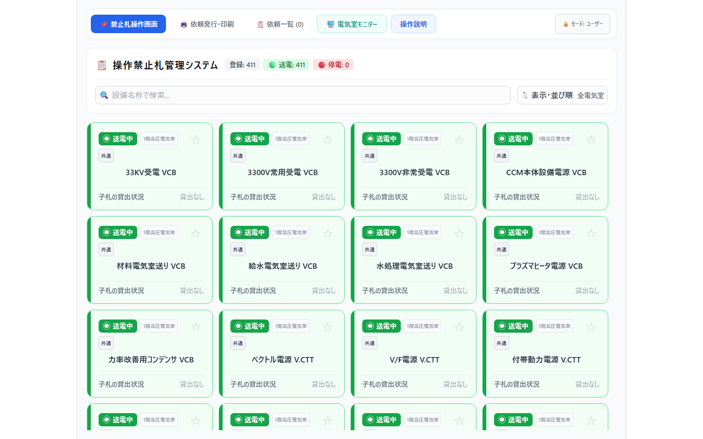
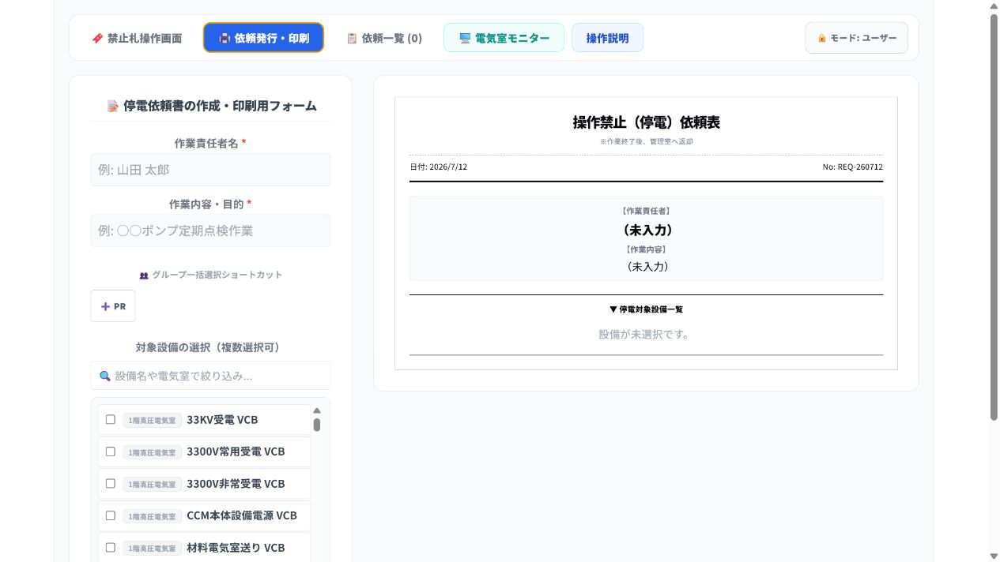
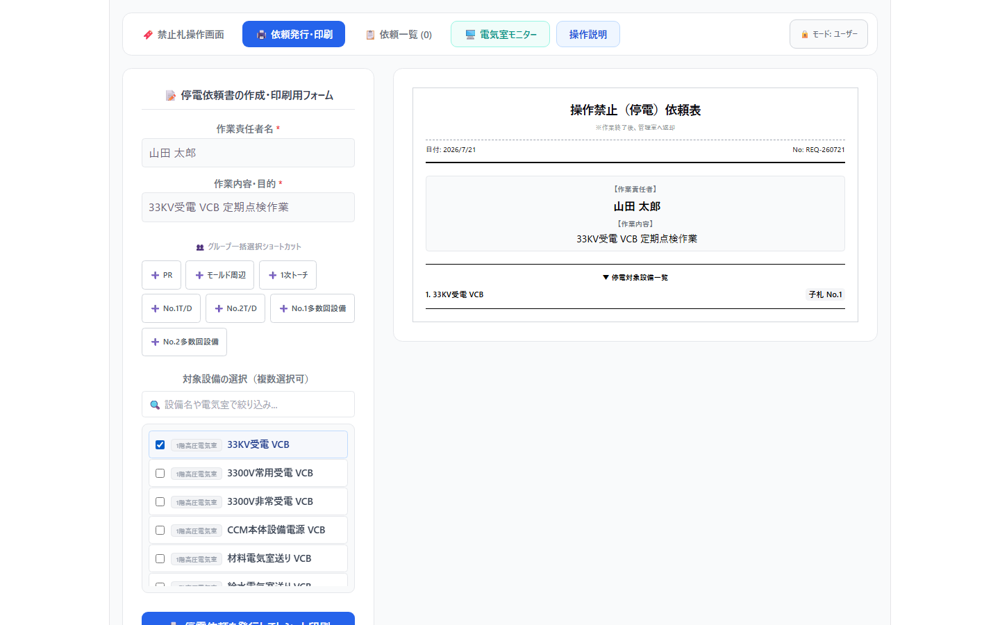
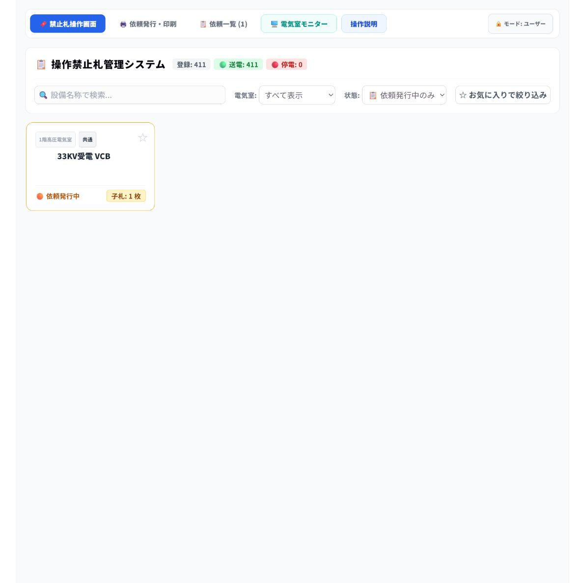
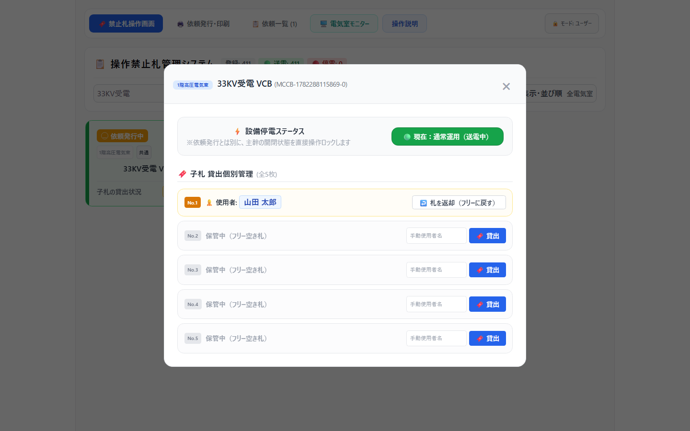
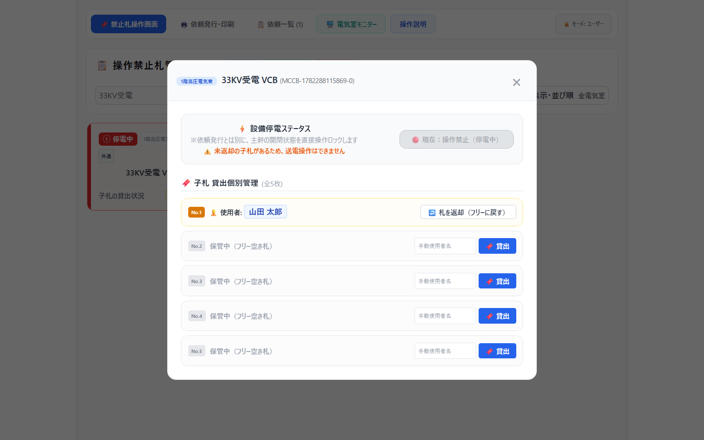

この手順書は、一般作業者向けに「停電依頼を受ける」から「依頼発行済みの設備を停電状態にする」までの通常手順をまとめたものです。
PDFにする場合は、同じ内容を印刷向けに整えた docs/power-outage-request-user-manual.html をブラウザで開き、印刷先を「PDFに保存」にしてください。
1. 作業者より停電依頼を受けます。
2. 停電依頼作成画面で、作業者名と作業内容を入力します。
3. 停電対象の設備を選択します。
4. 依頼を発行して、依頼表を印刷します。
5. 印刷された依頼表をもとに、禁止札掛けから該当する札を持ち出します。
6. 依頼表の設備名称と現地設備の名称を確認し、設備を停電します。
7. 停電後、札操作画面で、依頼発行されている設備を「停電中」に切り替えます。
1. ブラウザで https://192.168.40.111/#/ を開きます。
2. 画面上部のメニューが表示されることを確認します。
3. 停電依頼を作成する場合は、上部メニューの 依頼発行・印刷 を選択します。

確認ポイント
• 通常の操作は モード: ユーザー のままで行います。
• 停電依頼作成は、上部メニューの 依頼発行・印刷 から開始します。
1. 作業責任者名 に、停電を依頼した作業者または作業責任者の氏名を入力します。
2. 作業内容・目的 に、停電が必要な作業内容を入力します。

入力例
| 項目 | 入力例 |
|---|---|
| 作業責任者名 | 山田 太郎 |
| 作業内容・目的 | 33KV受電 VCB 定期点検作業 |
注意
• 作業責任者名と作業内容・目的は必須項目です。
• 後で依頼表を確認したときに作業内容が分かるよう、簡潔かつ具体的に入力してください。
1. 対象設備の選択（複数選択可） で、停電する設備を探します。
2. 設備数が多い場合は、検索欄に設備名または電気室名を入力して絞り込みます。
3. 停電対象設備のチェックボックスをオンにします。
4. 複数設備を停電する場合は、対象設備をすべて選択します。

確認ポイント
• 選択した設備は、右側の印刷プレビューに反映されます。
• ダミー札を選択した場合は、代替する実際の設備名称を入力します。
• 設備名称の選択間違いがないか、発行前に必ず確認します。
1. 入力内容と対象設備を確認します。
2. 停電依頼を発行してレシート印刷 を押します。
3. 印刷された依頼表を受け取ります。
4. 依頼表に、作業責任者名、作業内容、停電対象設備が正しく印字されていることを確認します。
注意
• 依頼を発行しても、設備の状態は自動で停電中にはなりません。
• 実際に設備を停電した後、札操作画面で対象設備を停電中に切り替える必要があります。
1. 印刷された依頼表を持って、禁止札掛けに移動します。
2. 依頼表に記載された設備名称を確認します。
3. 設備名称に対応する禁止札を持ち出します。
4. 持ち出す札が依頼表の設備名称と一致していることを、声出しまたは指差しで確認します。
確認ポイント
• 似た名称の設備がある場合は、電気室名や設備番号も確認します。
• 不明点がある場合は、依頼者または責任者に確認し、自己判断で札を持ち出さないでください。
1. 現地設備の名称を確認します。
2. 依頼表に記載された設備名称と一致していることを確認します。
3. 現地の安全手順に従って、設備を停電します。
4. 停電後、必要な安全確認を行います。
注意
• 画面で依頼を発行しても、現地の設備が自動で停電するわけではありません。
• 設備の停電操作は、現場で定められた安全手順に従って行ってください。
1. ブラウザでメイン操作画面 https://192.168.40.111/#/ を開きます。
2. 設備名称で検索 欄に、依頼表に記載された設備名を入力して絞り込みます。
3. 依頼発行中の設備は 📋 依頼発行中 の表示が上部に付きます。依頼表の名称と一致することを確認します。
4. 対象設備カードを選択します。
5. 表示された設備操作画面で 現在：通常運用（送電中） ボタンを押します。
6. 表示が 現在：操作禁止（停電中） に変わったことを確認します。



確認ポイント
• 停電依頼発行済みの設備だけを停電中にします。
• 設備名称をもう一度確認してから切り替えます。
• 切り替え後、設備カードの状態表示が停電中になっていることを確認します。
| 確認項目 | チェック |
|---|---|
| 依頼表の作業責任者名が正しい | □ |
| 依頼表の作業内容が正しい | □ |
| 停電対象設備をすべて選択した | □ |
| 印刷された依頼表と禁止札の名称が一致している | □ |
| 現地設備名称と依頼表の名称が一致している | □ |
| 現地で設備を停電した | □ |
| 札操作画面で対象設備を停電中に切り替えた | □ |
• 依頼を発行しただけでは、設備状態は停電中になりません。
現地で停電後、必ず札操作画面で停電中へ切り替えてください。
• 設備名称の確認を省略しないでください。
依頼表、禁止札、現地設備、画面上の設備名称を照合してください。
• 対象設備が見つからない場合は、検索条件を変更してください。
設備名の一部、電気室名、または名称の表記ゆれを確認してください。
• 判断に迷う場合は、作業を止めて責任者に確認してください。